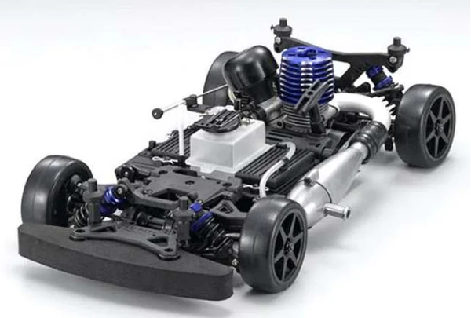

京商 V-One SⅢ

引用元画像：京商公式サイト
📋 基本情報
| メーカー | 京商（Kyosho） |
|---|---|
| 機種名 | V-One SⅢ（ブイワン エス・スリー） |
| シャーシ略称 | V-One SⅢ |
| 型番 | 31341（XANAVI NISMO Z 2007） ※他に31343、31344、31349、31350などボディバリエーションあり |
| 発売時期 | 2007年 |
| 価格 | 詳細不明 |
| 生産状況 | 生産終了 |
| カテゴリー | ラジコンカー（1/10スケール GPツーリングカー） |
| サブカテゴリー | GPツーリングカー（4WD ベルトドライブ） |
| シリーズ | PureTen V-Oneシリーズ |
📏 シャーシスペック
| スケール | 1/10 |
|---|---|
| フレーム | アルミプレートシャーシ ※低く幅広い設計で低重心化を実現 |
| 駆動方式 | ベルトドライブ4WD |
| デフギヤ | ギヤデフ（前後） ※オイル粘度変更で調整可能、優れた耐久性 |
| ベアリング | フルベアリング仕様 |
| ドライブシャフト | ドッグボーン式 |
⚙️ 駆動系
| エンジン | 京商 GXR-15（.12-.15クラス）標準装備 ※V-One S/SⅡのGS15-Rから変更 ※リコイルスターター付属（一部モデルはタッチスターター） |
|---|---|
| 燃料タンク | V-ONE RRRと同じ燃料タンク ※過酷なレースコンディションでも安定した燃料供給 |
| トランスミッション | 2スピードトランスミッション対応 |
| クラッチ | 遠心クラッチ |
| ギヤ比 | 8.13:1 / 5.6:1（V-ONE RRRと同じ） |
🔧 サスペンション
| 形式 | 4輪ダブルウィッシュボーン独立懸架 ※世界チャンピオンV-ONE RRRと同じサスペンションシステム |
|---|---|
| ダンパー | コイルスプリング付きオイルダンパー×4本 ※異なるスプリングレートのオプションスプリング対応 |
| 調整機能 | レースコンディションに合わせて簡単にセッティング・調整が可能 |
| スタビライザー | 前後にスタビライザー装着可能（オプション） |
💡 特徴
V-One SⅢ Evo.へと進化
- 2007年にリリースされた、V-One SⅡのさらなる進化版
- V-ONE SIIIの息を呑むようなレーシングパフォーマンスがEvo.でさらに高いレベルに進化
- 実績あるシャーシでさらなる耐久性、メンテナンス性を獲得
V-ONE RRRの技術を投入
- 世界チャンピオンV-ONE RRRと同じサスペンションシステムを採用
- 低く幅広い設計で低重心化を実現
- 2スピードトランスミッション対応
- V-ONE RRRと同じギヤ比（8.13:1 / 5.6:1）
- V-ONE RRRと同じ燃料タンクで安定した燃料供給
ベルトドライブ4WDの優れた操縦性
- ドライバーフレンドリーなコントロール性能とダイナミックなスピード
- ビギナーからエキスパートまで対応、最初のレースから栄光のレースまでサポート
- 低グリップ路面でも安定した操縦性を発揮
GXR-15エンジン搭載
- V-One S/SⅡのGS15-Rから、GXR-15エンジンにアップグレード
- 圧倒的なパワーを発揮
- 一部モデルはコンパクトなタッチスターター搭載（ストレスフリーなエンジン始動、グロープラグ状態表示LED付き）
空力特性に優れるボディ
- 空力特性に優れるボディが高い戦闘力を発揮
- 京商カップ（KYOSHO CUP）で大活躍すること間違いなし
多彩なボディバリエーション
- XANAVI NISMO Z 2007（31341）
- apr MR-S（31343）
- ARTA NSX 2007（31344）
- MOTUL AUTECH GT-R（31349）
- Lightning McQueen apr MR-S（31350）
🔧 ぽすとそに工房での修理実績
修理難易度
★★★★☆（困難）
パーツ供給が極端に少ないため、修理が困難ですが、V-ONE RRRやV-ONE R4 Evo.2との一部パーツ互換性があります。
よくある故障・注意点
- ベルトの伸び・摩耗：ベルトドライブ方式のため、ベルトの定期的な点検・交換が必要
- ベルトテンショナーの劣化：張り具合が緩むと駆動効率が低下
- ギヤデフのオイル漏れ：Oリングの劣化によるオイル漏れ
- ドッグボーンドライブシャフトの摩耗：ジョイント部分の定期的なグリスアップが必要
- オイルダンパーのオイル漏れ：Oリングシールの劣化によるオイル漏れ
- ダンパーシャフトの傷：ダンパーシャフトに傷があるとオイル漏れの原因に
- 2スピードトランスミッションのメンテナンス：ギヤやクラッチの定期的な点検が必要
- エンジンのメンテナンス：GXR-15エンジンの定期的な清掃・調整が必要
- パーツ入手困難：生産終了により、特にベルト類やギヤデフ関連のパーツが入手困難
修理のポイント
- ベルトの張り具合チェック：定期的にベルトの張り具合をチェック（中央部を押して5mm程度の沈み込みが理想）
- ベルトテンショナーの調整：ベルトが緩んだらテンショナーで調整、ベルトが摩耗している場合は早めに交換
- ドライブプーリーの点検：プーリーの歯が摩耗していないか確認、歯が丸くなっている場合は交換
- ギヤデフのオイル交換：走行特性に合わせてデフオイルの粘度を変更可能
- オイルダンパーのメンテナンス：Oリングシールを定期的に交換、ダンパーシャフトに傷がないか確認
- ボールジョイントの点検：ボールコネクターが緩んでいないか確認、緩んでいる場合は交換（レース前に必ずチェック）
- フルベアリングの清掃：ベアリングにゴミや砂が入り込むと摩耗が進むため、定期的に清掃・グリスアップ
- ドライブシャフトの点検：スチール製シャフトは摩耗・曲がりやすいため、可能であればチタン製に交換推奨
- 2スピードトランスミッションの調整：ギヤ比を8.13:1または5.6:1に切り替え可能
その他の特徴
- 京商カップ（KYOSHO CUP）で使用可能な公式レース車両
- V-One S、V-One SII、V-One RRRなどと一部パーツ互換性あり
- V-ONE R4 Evo.2のオプションパーツが流用可能
- V-ONE RRRのデフギヤを使用可能（TCD（トルク・コントロール・デフ）ギヤも流用可能）
- 現在はパーツ供給が極端に少ないが、V-ONE RRR系パーツの流用で修理可能性が高い
- 世界チャンピオンマシンV-ONE RRRの技術を投入した高性能シャーシ
- ビギナーからエキスパートまで幅広く対応可能